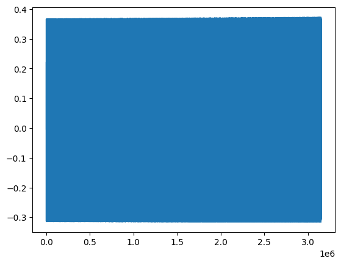
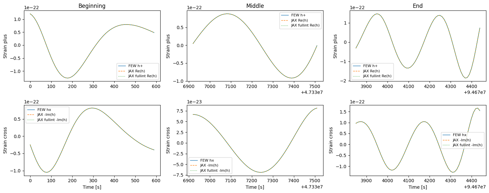

EMRI_wf_JAX
Build the full EMRI waveform with a direct-mode-sum implementation.
Notebook structure
Setup — trajectory, amplitude generation, and mode selection.
Alternative Implementations — three earlier builders, kept for reference:
Function |
Strategy |
Materialises |
Notes |
|---|---|---|---|
|
vmap over a batch of EMRIs |
Yes — must be provided as input |
Good for many short EMRIs on the same grid |
|
|
No — only |
JIT shapes tied to |
|
Upsample all modes in one pass |
Yes — |
Utility helper, not a standalone waveform builder |
Primary Implementation — Interp_and_modesum_WFbuilder.
Streams over mode batches on the full dense time grid. Per batch: a single fused kernel interpolates the modes, computes one shared exp(−i·phase), and reduces via two GEMVs. The (n_t_dense, n_m) array is never materialised. Use this for production.
[1]:
import os
idx = 1
os.environ["CUDA_VISIBLE_DEVICES"] = str(idx)
os.environ["XLA_PYTHON_CLIENT_PREALLOCATE"] = "false"
os.environ["FEW_DATA_DIR"] = "/home/fedefant/.local/share/few/v2.0.0/download"
[2]:
import time
import numpy as np
import scipy as sp
import matplotlib.pyplot as plt
import jax
import jax.numpy as jnp
#import cupy
jax.config.update("jax_enable_x64", True)
import psutil
import few
from few.trajectory.ode.flux import KerrEccEqFlux
from few.trajectory.inspiral import EMRIInspiral
from few.utils.geodesic import get_separatrix
from few.summation.directmodesum import DirectModeSum
from few.waveform import GenerateEMRIWaveform
from few.waveform.waveform import FastKerrEccentricEquatorialFlux
from few.utils.constants import MTSUN_SI, YRSID_SI
from few.utils.utility import get_mismatch
Gpc = few.utils.constants.Gpc
MRSUN_SI = few.utils.constants.MRSUN_SI
cupy = None
if cupy is not None:
xp = cupy
else:
xp = np
def report_mem(tag):
proc = psutil.Process()
rss_gb = proc.memory_info().rss / 1024**3
msg = [f"{tag} | CPU RSS: {rss_gb:.2f} GB"]
if cupy is not None:
try:
free, total = cupy.cuda.runtime.memGetInfo()
msg.append(f"GPU: {((total-free)/1024**3):.2f} GB used / {total/1024**3:.2f} GB total")
except Exception as exc:
msg.append(f"GPU: unavailable ({exc})")
print(" | ".join(msg))
[3]:
# JAX GPU preallocation diagnostic
report_mem("before jax warmup")
print("JAX backend:", jax.default_backend())
print("JAX devices:", jax.devices())
_warm = jnp.ones((1,))
_ = _warm.block_until_ready()
report_mem("after jax warmup")
before jax warmup | CPU RSS: 0.30 GB
JAX backend: gpu
JAX devices: [CudaDevice(id=0)]
after jax warmup | CPU RSS: 0.74 GB
[10]:
cfg = few.get_config_setter(reset=True)
cfg.set_log_level("info")
# FastKerrEccentricEquatorialFlux bundles trajectory, AmpInterpKerrEccEq,
# GetYlms, ModeSelector, and InterpolatedModeSum. We reuse its components
# directly so the manual pipeline is guaranteed to use the same setup.
report_mem("before model init")
if cupy is not None:
try:
cupy.get_default_memory_pool().free_all_blocks()
except Exception:
pass
try:
model = FastKerrEccentricEquatorialFlux(force_backend='gpu')
report_mem("after model init (gpu)")
except Exception as exc:
print(f"GPU model init failed: {exc}")
print("Falling back to CPU backend for model init.")
model = FastKerrEccentricEquatorialFlux(force_backend='cpu')
report_mem("after model init (cpu)")
few_traj = model.inspiral_generator
# The mode threshold determines how many modes we are going to have
mode_selection_threshold = 1e-5
mode_selector_kwargs = dict(
mode_selection_threshold = mode_selection_threshold,
include_minus_mkn = True,
)
before model init | CPU RSS: 3.81 GB
after model init (gpu) | CPU RSS: 3.80 GB
Primary Implementation
``Interp_and_modesum_WFbuilder`` – recommended for all production runs.
Three versions (earlier ones commented out)
Version |
Amplitude interp |
Phase interp |
Exp cost |
Notes |
|---|---|---|---|---|
v1 |
linear |
linear |
n_m x n_t per batch |
baseline |
v2 |
linear |
linear |
~20 total |
factorised exp |
v3 |
cubic spline |
cubic spline |
~20 total |
matches FEW accuracy |
v3 algorithm
``_fit_spline`` – fit not-a-knot cubic splines to the 67 sparse trajectory points for all mode amplitudes
(4, 66, n_m)and all 3 phases(4, 66, 3). Negligible CPU cost.``_bracket`` – compute bracket indices
indsand time offsetdxfor the fullt_denseonce.``_eval_cubic`` – evaluate the 3 phase splines at
t_densevia Horner’s method ->(n_t_dense, 3).Exp factorisation – precompute
E_phi,E_theta,E_rtables (~20 exp calls).For each mode batch of size
sum_batch_size:Evaluate amplitude spline batch via Horner: gathers from tiny
(4, 66, batch)arrays.Assemble phase factor:
E = (E_phi[m_inv] * E_theta[k_inv] * E_r[n_inv]).T– no exp.T = teuk_dense * E, thenw1 = T @ ylm_pos,w2 = conj(T) @ coeff_neg.Accumulate; discard
teuk_dense.
Accuracy: cubic splines match FEW’s InterpolatedModeSum (same boundary conditions). The mismatch at fine dt that appeared with linear interpolation is eliminated.
Speed: Horner gathers from (66, batch) source arrays (~200 KB) – XLA can fuse the four gather+multiply steps without materialising intermediate buffers. The exp factorisation from v2 is retained.
[17]:
# Mode-batched interp + direct mode sum.
# v3: cubic spline interp (amplitudes AND phases) + factorised exp [ACTIVE]
#
# v3 matches FEW's InterpolatedModeSum accuracy (not-a-knot cubic splines)
# while keeping the exp-factorisation speedup from v2.
from scipy.interpolate import CubicSpline as _CubicSpline
def _fit_spline(t_sparse_np, y_sparse_np):
"""Fit a not-a-knot cubic spline and return scipy's (4, n-1, ...) coefficient array."""
cs = _CubicSpline(t_sparse_np, y_sparse_np)
return jnp.asarray(cs.c) # (4, n_sparse-1, *y_shape[1:])
@jax.jit
def _bracket(t_traj, t_dense):
"""Bracket indices and normalised weights: inds, w = (t-t_i)/(t_{i+1}-t_i)."""
inds = jnp.clip(
jnp.searchsorted(t_traj, t_dense, side="right") - 1,
0, t_traj.size - 2,
)
w = (t_dense - t_traj[inds]) / (t_traj[inds + 1] - t_traj[inds])
return inds, w
@jax.jit
def _eval_cubic(spline_c, inds, dx):
"""Evaluate cubic splines at dense points via Horner's method.
spline_c : (4, n_sparse-1, n_splines) scipy cs.c layout:
c[0]=cubic, c[1]=quad, c[2]=linear, c[3]=constant
inds : (n_dense,) int -- bracket indices
dx : (n_dense,) float -- time offset within bracket (t - t_i)
returns : (n_dense, n_splines)
"""
result = spline_c[0, inds] # d (cubic coeff)
result = spline_c[1, inds] + dx[:, None] * result # c + dx*d
result = spline_c[2, inds] + dx[:, None] * result # b + dx*(c+dx*d)
result = spline_c[3, inds] + dx[:, None] * result # a + dx*(...)
return result # (n_dense, n_splines)
# =============================================================================
# v3 -- cubic spline interp (amplitudes + phases) + factorised exp [ACTIVE]
# =============================================================================
# Cubic splines (not-a-knot, same as FEW's InterpolatedModeSum) are fitted
# once to the 67 sparse trajectory points -- negligible CPU time.
# Evaluation uses Horner's method: each step gathers from a tiny
# (66, batch) coefficient array before writing the (n_t_dense, batch) result.
# The exp factorisation from v2 is retained.
@jax.jit
def _interp_modesum_batch_cubic(
inds, dx, # (n_t_dense,) -- bracket index and time offset
spline_coeffs_b, # (4, n_sparse-1, batch) complex128 -- tiny coefficient batch
ylm_pos_b, coeff_neg_b,
E_phi, # (n_uniq_m, n_t_dense) -- pre-factored m-phase exp table
E_theta, # (n_uniq_k, n_t_dense) -- pre-factored k-phase exp table
E_r, # (n_uniq_n, n_t_dense) -- pre-factored n-phase exp table
m_inv_b, k_inv_b, n_inv_b, # (batch,) int32 -- indices into exp tables
):
# Cubic Horner evaluation of mode amplitudes -- no linear weight w.
# scipy c layout: c[0]=cubic, c[1]=quad, c[2]=linear, c[3]=constant
teuk_dense = spline_coeffs_b[0, inds]
teuk_dense = spline_coeffs_b[1, inds] + dx[:, None] * teuk_dense
teuk_dense = spline_coeffs_b[2, inds] + dx[:, None] * teuk_dense
teuk_dense = spline_coeffs_b[3, inds] + dx[:, None] * teuk_dense # (n_t, batch)
# Phase factor by gather + multiply -- no exp call here.
E = (E_phi[m_inv_b] * E_theta[k_inv_b] * E_r[n_inv_b]).T # (n_t, batch)
T = teuk_dense * E
w1 = T @ ylm_pos_b
w2 = jnp.conj(T) @ coeff_neg_b
return w1 + w2
@jax.jit
def _eval_bezier_phases_on_dense(t_dense, knot_t, coeff_3d):
"""DOPR853 degree-7 Bezier evaluation -- matches FEW's InterpolatedModeSum kernel.
`coeff_3d` is FEW's `few_traj.integrator_spline_phase_coeff` with shape
`(N_intervals, 3, 8)`. Axis-1 ordering is [Phi_phi, Phi_theta, Phi_r],
axis-2 holds the 8 Bezier coefficients per interval, identical to the
DOPR853 native dense-output polynomial used inside FEW.
Formula (from interpolate.cu line 642):
s = (t - knot_t[i]) / (knot_t[i+1] - knot_t[i])
s1 = 1 - s
P(s) = c0 + s*(c1 + s1*(c2 + s*(c3 + s1*(c4 + s*(c5 + s1*(c6 + s*c7))))))
"""
inds = jnp.clip(
jnp.searchsorted(knot_t, t_dense, side="right") - 1,
0, knot_t.size - 2,
)
s = (t_dense - knot_t[inds]) / (knot_t[inds + 1] - knot_t[inds])
s1 = 1.0 - s
# Gather all 8 coeffs for all 3 phases at every dense time -- (n_t, 3, 8)
c = coeff_3d[inds]
# Horner-Bezier evaluation along the coefficient axis (inside-out)
out = c[..., 7]
out = c[..., 6] + s[:, None] * out
out = c[..., 5] + s1[:, None] * out
out = c[..., 4] + s[:, None] * out
out = c[..., 3] + s1[:, None] * out
out = c[..., 2] + s[:, None] * out
out = c[..., 1] + s1[:, None] * out
out = c[..., 0] + s[:, None] * out # (n_t, 3)
return out[:, 0], out[:, 1], out[:, 2]
def Interp_and_modesum_WFbuilder(
time, teuk_modes, ylms, ls, ms, ks, ns,
Phi_phi_tr, Phi_theta_tr, Phi_r_tr,
t_dense,
sum_batch_size=100,
phase_spline_t=None,
phase_spline_coeff=None,
):
"""Mode-batched fused interp + direct mode sum.
Amplitudes: not-a-knot cubic spline (matches FEW's amp interpolation).
Phases:
- If `phase_spline_t` and `phase_spline_coeff` are provided, use FEW's
DOPR853 degree-7 Bezier dense output. This matches FEW's
`InterpolatedModeSum` to machine precision. Pass:
phase_spline_t = few_traj.integrator_spline_t # (N+1,)
phase_spline_coeff = few_traj.integrator_spline_phase_coeff # (N, 3, 8)
right after calling few_traj(...) with the same (m1, m2, a, p0, e0, x0, T).
- Otherwise, use a not-a-knot cubic spline on Phi_*_tr -- faster to
construct but the phase between sparse knots drifts ~1e-3 rad
relative to DOPR853, which is what causes the empirical "2i factor"
observed when comparing against FEW's GenerateEMRIWaveform.
All the speed optimisations from v3 are retained:
- cubic spline for amplitudes (gather + Horner inside the JIT kernel)
- exp factorisation: only ~20 complex exp() calls instead of n_m * n_t
- mode-batched GEMV reductions
"""
n_m = int(ls.shape[0])
t_np = np.array(time)
# Fit cubic spline to amplitudes once (FEW also uses cubic for amps).
spline_teuk = _fit_spline(t_np, np.array(teuk_modes)) # (4, n_sparse-1, n_m)
# Bracket indices and actual time offset for amplitude eval.
inds, w = _bracket(time, t_dense)
h_sparse = time[1:] - time[:-1]
dx = w * h_sparse[inds]
# ------------------------------------------------------------------
# Phase interpolation: either FEW DOPR853 Bezier (preferred) or cubic.
# ------------------------------------------------------------------
if phase_spline_t is not None and phase_spline_coeff is not None:
knot_t_jax = jnp.asarray(np.array(phase_spline_t), dtype=jnp.float64)
coeff_3d_jax = jnp.asarray(np.array(phase_spline_coeff), dtype=jnp.float64)
Phi_phi_d, Phi_theta_d, Phi_r_d = _eval_bezier_phases_on_dense(
t_dense, knot_t_jax, coeff_3d_jax,
)
else:
# cubic spline fallback (slightly less accurate, no FEW state needed)
phases_np = np.stack([np.array(Phi_phi_tr),
np.array(Phi_theta_tr),
np.array(Phi_r_tr)], axis=1)
spline_phases = _fit_spline(t_np, phases_np)
phases_dense = _eval_cubic(spline_phases, inds, dx)
Phi_phi_d, Phi_theta_d, Phi_r_d = (
phases_dense[:, 0], phases_dense[:, 1], phases_dense[:, 2]
)
# Ylm coefficient vectors (unchanged).
ylm_pos = ylms[:n_m]
ylm_neg = ylms[n_m:2 * n_m]
coeff_neg = ((ms > 0) * ((-1.0) ** ls)).astype(ylm_neg.dtype) * ylm_neg
# Exp factorisation (one exp per unique quantum number, not per mode).
unique_ms, m_inv = np.unique(np.array(ms), return_inverse=True)
unique_ks, k_inv = np.unique(np.array(ks), return_inverse=True)
unique_ns, n_inv = np.unique(np.array(ns), return_inverse=True)
E_phi = jnp.exp(-1j * jnp.asarray(unique_ms)[:, None] * Phi_phi_d[None, :])
E_theta = jnp.exp(-1j * jnp.asarray(unique_ks)[:, None] * Phi_theta_d[None, :])
E_r = jnp.exp(-1j * jnp.asarray(unique_ns)[:, None] * Phi_r_d[None, :])
m_inv_j = jnp.asarray(m_inv, dtype=jnp.int32)
k_inv_j = jnp.asarray(k_inv, dtype=jnp.int32)
n_inv_j = jnp.asarray(n_inv, dtype=jnp.int32)
out_wf = jnp.zeros(t_dense.shape[0], dtype=jnp.complex128)
for i in range(0, n_m, sum_batch_size):
i_end = min(i + sum_batch_size, n_m)
out_wf = out_wf + _interp_modesum_batch_cubic(
inds, dx, spline_teuk[:, :, i:i_end],
ylm_pos[i:i_end], coeff_neg[i:i_end],
E_phi, E_theta, E_r,
m_inv_j[i:i_end], k_inv_j[i:i_end], n_inv_j[i:i_end],
)
return np.asarray(out_wf)
Full waveform timing
[36]:
# FEW vs fewtrax timing table (JIT where applicable)
import time
import numpy as np
import jax
import jax.numpy as jnp
def _sec(t0):
return time.perf_counter() - t0
rows = []
# --- FEW pipeline (uses FEW mode selector + FEW amplitudes) ---
t0_total = time.perf_counter()
t0 = time.perf_counter()
t, p, e, Phi_phi, Phi_theta, Phi_r = traj(**call_kwargs)
t_traj = _sec(t0)
t0 = time.perf_counter()
teuk_modes = model.amplitude_generator(a, model.xp.asarray(p), model.xp.asarray(e), x0)
ylms_full = model.ylm_gen(model.unique_l, model.unique_m, theta_source, phi_source)[model.inverse_lm]
x_arr = np.full_like(p, x0)
modeinds = [model.l_arr, model.m_arr, model.n_arr]
fund_freq_args = (m1, m2, a,
model.xp.asarray(p),
model.xp.asarray(e),
model.xp.asarray(x_arr),
model.xp.asarray(t))
teuk_sel, ylms_sel, ls, ms, ns = model.mode_selector(
teuk_modes, ylms_full, modeinds,
fund_freq_args=fund_freq_args,
**mode_selector_kwargs,
)
t_few_modes = _sec(t0)
teuk = jnp.asarray(teuk_sel)
ylms = jnp.asarray(ylms_sel)
ls = jnp.asarray(ls)
ms = jnp.asarray(ms)
ns = jnp.asarray(ns)
ks = jnp.zeros_like(ls)
dt = 10
n_pts_full = int((t[-1] - t[0]) / dt) + 1
max_dense = 5000
n_pts = min(n_pts_full, max_dense)
t_dense = t[0] + dt * np.arange(n_pts)
t0 = time.perf_counter()
h_fewjax = Interp_and_modesum_WFbuilder(
t, teuk, ylms, ls, ms, ks, ns,
Phi_phi_tr=Phi_phi, Phi_theta_tr=Phi_theta, Phi_r_tr=Phi_r,
t_dense=t_dense,
sum_batch_size=100,
)
t_few_wf = _sec(t0)
t_few_total = _sec(t0_total)
rows.append(("FEW", t_traj, t_few_modes, t_few_wf, t_few_total, int(teuk.shape[1])))
# --- fewtrax pipeline (fewtrax select_modes + JAX amps with jit) ---
t0_total = time.perf_counter()
t0 = time.perf_counter()
t, p, e, Phi_phi, Phi_theta, Phi_r = traj(**call_kwargs)
t_traj2 = _sec(t0)
t0 = time.perf_counter()
mode_inds_traj = amp_np.select_modes(
a, np.asarray(p), np.asarray(e),
threshold=mode_selection_threshold,
x=x0,
)
t_fx_modes = _sec(t0)
t0 = time.perf_counter()
amp_data_jax_traj = load_amplitude_data_jax(FEW_DATA_DIR, mode_indices=mode_inds_traj)
amp_jax_full = JAXAmplitudeInterpolator(amp_data_jax_traj)
amp_jax_full_jit = jax.jit(lambda p, e: amp_jax_full.evaluate_trajectory(a, p, e))
teuk_jax_full = amp_jax_full_jit(jnp.asarray(p), jnp.asarray(e))
_ = teuk_jax_full.block_until_ready()
t_fx_amps = _sec(t0)
t0 = time.perf_counter()
l_arr_sel = np.asarray(amp_data_np.l_arr)[mode_inds_traj]
m_arr_sel = np.asarray(amp_data_np.m_arr)[mode_inds_traj]
n_arr_sel = np.asarray(amp_data_np.n_arr)[mode_inds_traj]
ylm_pos = model.ylm_gen(l_arr_sel, m_arr_sel, theta_source, phi_source)
ylm_neg = model.ylm_gen(l_arr_sel, -m_arr_sel, theta_source, phi_source)
ylm_pos_np = ylm_pos.get() if hasattr(ylm_pos, "get") else np.asarray(ylm_pos)
ylm_neg_np = ylm_neg.get() if hasattr(ylm_neg, "get") else np.asarray(ylm_neg)
ylms_sel = np.concatenate([ylm_pos_np, ylm_neg_np])
t_fx_ylm = _sec(t0)
teuk_jax_sel = jnp.asarray(teuk_jax_full)
ylms_jax = jnp.asarray(ylms_sel)
ls_jax = jnp.asarray(l_arr_sel)
ms_jax = jnp.asarray(m_arr_sel)
ns_jax = jnp.asarray(n_arr_sel)
ks_jax = jnp.zeros_like(ls_jax)
dt = 10
n_pts_full = int((t[-1] - t[0]) / dt) + 1
max_dense = 5000
n_pts = min(n_pts_full, max_dense)
t_dense = t[0] + dt * np.arange(n_pts)
t0 = time.perf_counter()
h_jax_amp = Interp_and_modesum_WFbuilder(
t, teuk_jax_sel, ylms_jax, ls_jax, ms_jax, ks_jax, ns_jax,
Phi_phi_tr=Phi_phi, Phi_theta_tr=Phi_theta, Phi_r_tr=Phi_r,
t_dense=t_dense,
sum_batch_size=100,
)
t_fx_wf = _sec(t0)
t_fx_total = _sec(t0_total)
rows.append(("fewtrax", t_traj2, t_fx_modes + t_fx_amps + t_fx_ylm, t_fx_wf, t_fx_total, int(teuk_jax_sel.shape[1])))
print("\nTiming table (cap dense grid to avoid OOM):")
print("pipeline | traj(s) | mode+amp(s) | wf(s) | total(s) | n_modes")
for name, t_tr, t_modes, t_wf, t_tot, n_modes in rows:
print(f"{name:7s} | {t_tr:7.3f} | {t_modes:11.3f} | {t_wf:5.3f} | {t_tot:7.3f} | {n_modes:7d}")
Timing table (cap dense grid to avoid OOM):
pipeline | traj(s) | mode+amp(s) | wf(s) | total(s) | n_modes
FEW | 0.090 | 1.073 | 1.250 | 2.458 | 153
fewtrax | 0.087 | 36.193 | 0.012 | 36.296 | 86
[3]:
def _get_viewing_angles(qS, phiS, qK, phiK):
"""Transform from the detector frame to the source frame"""
cqS = np.cos(qS)
sqS = np.sin(qS)
cphiS = np.cos(phiS)
sphiS = np.sin(phiS)
cqK = np.cos(qK)
sqK = np.sin(qK)
cphiK = np.cos(phiK)
sphiK = np.sin(phiK)
# sky location vector
R = np.array([sqS * cphiS, sqS * sphiS, cqS])
# spin vector
S = np.array([sqK * cphiK, sqK * sphiK, cqK])
# get viewing angles
phi = -np.pi / 2.0 # by definition of source frame
theta = np.arccos(-np.dot(R, S)) # normalized vector
return (theta, phi)
Let’s start with TRAJECTORIES
[4]:
from fewtrax.data import load_flux_data
from fewtrax.trajectory import run_inspiral, EMRIInspiral
import time
FEW_DATA_DIR = os.environ["FEW_DATA_DIR"]
print(f"FEW_DATA_DIR = {FEW_DATA_DIR}")
flux_data = load_flux_data(FEW_DATA_DIR)
FEW_DATA_DIR = /home/fedefant/.local/share/few/v2.0.0/download
[5]:
# Parameter set
m1, m2 = 1e6, 10.0
a, e0, x0 = 0.9, 0.4, 1.0
p0 = 12.0
T = 1.0 # observation time [yr]
dt = 10.0 # cadence [s]
dist = 1.0 # luminosity distance [Gpc]
theta, phi = np.pi / 3, np.pi / 3 # observer angles for Ylm
# The angles are give in the detector frame,
# but the waveform generator we are using needs them in the source frame,
# so we transform them here. FEW does this internally when calling the waveform generator,
# but since we are using the components separately we need to do it ourselves.
theta_source, phi_source = _get_viewing_angles(qS=theta, phiS=phi, qK=0.0, phiK=0.0)
[6]:
traj = EMRIInspiral(flux_data)
call_kwargs = dict(p0=p0, e0=e0, a=a, T=T, M=m1, mu=m2, dense_steps=80)
# First call: compilation
tic = time.perf_counter()
_ = traj(**call_kwargs)
toc = time.perf_counter()
print(f"First call (compile): {1000*(toc-tic):.0f} ms")
First call (compile): 5064 ms
[7]:
# Second call: execution
tic = time.perf_counter()
t, p, e, Phi_phi, Phi_theta, Phi_r = traj(**call_kwargs)
toc = time.perf_counter()
print(f"Second call (execute): {1000*(toc-tic):.0f} ms")
traj_time = toc - tic
Second call (execute): 77 ms
[13]:
# Use the trajectory to select the modes and build the waveform.
# For the moment this part comes directly from FEW, but it can be JAXified,
# I just need to add the code
tic = time.perf_counter()
teuk_modes = model.amplitude_generator(a, model.xp.asarray(p), model.xp.asarray(e), x0)
ylms_full = model.ylm_gen(model.unique_l, model.unique_m, theta_source, phi_source)[model.inverse_lm]
x_arr = np.full_like(p, x0)
modeinds = [model.l_arr, model.m_arr, model.n_arr]
fund_freq_args = (m1, m2, a,
model.xp.asarray(p),
model.xp.asarray(e),
model.xp.asarray(x_arr),
model.xp.asarray(t))
teuk_sel, ylms_sel, ls, ms, ns = model.mode_selector(
teuk_modes, ylms_full, modeinds,
fund_freq_args=fund_freq_args,
**mode_selector_kwargs,
)
teuk = jnp.asarray(teuk_sel) # (n_t, n_m) complex128
ylms = jnp.asarray(ylms_sel) # (2*n_m,) complex128
ls = jnp.asarray(ls)
ms = jnp.asarray(ms)
ns = jnp.asarray(ns)
ks = jnp.zeros_like(ls)
toc = time.perf_counter()
print(f"Mode selection: {1000*(toc-tic):.0f} ms")
mode_selection_time = toc - tic
Mode selection: 14214 ms
[14]:
# Mode summation on the dense time grid.
# Performed in JAX with the Interp_and_modesum_WFbuilder defined above,
# which fuses the amplitude interpolation and mode summation into a single JIT-compiled kernel,
# and uses cubic splines for interpolation and exp factorisation for speed.
# This version uses Cubic splines for both amplitudes and phases,
# so it does not require any FEW state and can be used as a standalone
# function with just the sparse trajectory output.
print("Running mode summation on dense time grid...")
tic = time.perf_counter()
dt = 10
n_pts = int((t[-1] - t[0]) / dt) + 1 # times
t_dense = t[0] + dt * np.arange(n_pts)
# Timing the WF
tic = time.time()
h_fewjax = Interp_and_modesum_WFbuilder(
t, teuk, ylms, ls, ms, ks, ns,
Phi_phi_tr = Phi_phi, Phi_theta_tr = Phi_theta, Phi_r_tr = Phi_r,
t_dense = t_dense,
sum_batch_size=100,
)
toc = time.time()
print(f"Fused interp + modesum: {toc-tic:.3f} s")
_scale = dist * Gpc / (m2 * MRSUN_SI)
h_jax_scaled = h_fewjax / _scale
mode_summation_time = toc - tic
Running mode summation on dense time grid...
E0527 15:19:50.705731 421269 cuda_executor.cc:1273] [0] Failed to allocate device memory: INTERNAL: [0] Failed to allocate 2.00GiB (2147483648 bytes) of device memory: : CUDA_ERROR_OUT_OF_MEMORY: out of memory
E0527 15:19:51.215477 421269 cuda_executor.cc:1273] [0] Failed to allocate device memory: INTERNAL: [0] Failed to allocate 8.00GiB (8589934592 bytes) of device memory: : CUDA_ERROR_OUT_OF_MEMORY: out of memory
E0527 15:19:51.215617 421269 cuda_executor.cc:1273] [0] Failed to allocate device memory: INTERNAL: [0] Failed to allocate 7.20GiB (7730940928 bytes) of device memory: : CUDA_ERROR_OUT_OF_MEMORY: out of memory
E0527 15:19:51.215713 421269 cuda_executor.cc:1273] [0] Failed to allocate device memory: INTERNAL: [0] Failed to allocate 6.48GiB (6957846528 bytes) of device memory: : CUDA_ERROR_OUT_OF_MEMORY: out of memory
E0527 15:19:51.215806 421269 cuda_executor.cc:1273] [0] Failed to allocate device memory: INTERNAL: [0] Failed to allocate 5.83GiB (6262061568 bytes) of device memory: : CUDA_ERROR_OUT_OF_MEMORY: out of memory
E0527 15:19:51.215900 421269 cuda_executor.cc:1273] [0] Failed to allocate device memory: INTERNAL: [0] Failed to allocate 5.25GiB (5635855360 bytes) of device memory: : CUDA_ERROR_OUT_OF_MEMORY: out of memory
E0527 15:19:51.216005 421269 cuda_executor.cc:1273] [0] Failed to allocate device memory: INTERNAL: [0] Failed to allocate 8.00GiB (8589934592 bytes) of device memory: : CUDA_ERROR_OUT_OF_MEMORY: out of memory
E0527 15:19:51.216113 421269 cuda_executor.cc:1273] [0] Failed to allocate device memory: INTERNAL: [0] Failed to allocate 7.20GiB (7730940928 bytes) of device memory: : CUDA_ERROR_OUT_OF_MEMORY: out of memory
E0527 15:19:51.216204 421269 cuda_executor.cc:1273] [0] Failed to allocate device memory: INTERNAL: [0] Failed to allocate 6.48GiB (6957846528 bytes) of device memory: : CUDA_ERROR_OUT_OF_MEMORY: out of memory
E0527 15:19:51.216294 421269 cuda_executor.cc:1273] [0] Failed to allocate device memory: INTERNAL: [0] Failed to allocate 5.83GiB (6262061568 bytes) of device memory: : CUDA_ERROR_OUT_OF_MEMORY: out of memory
E0527 15:19:51.216382 421269 cuda_executor.cc:1273] [0] Failed to allocate device memory: INTERNAL: [0] Failed to allocate 5.25GiB (5635855360 bytes) of device memory: : CUDA_ERROR_OUT_OF_MEMORY: out of memory
E0527 15:20:01.216813 421269 cuda_executor.cc:1273] [0] Failed to allocate device memory: INTERNAL: [0] Failed to allocate 8.00GiB (8589934592 bytes) of device memory: : CUDA_ERROR_OUT_OF_MEMORY: out of memory
E0527 15:20:01.216986 421269 cuda_executor.cc:1273] [0] Failed to allocate device memory: INTERNAL: [0] Failed to allocate 7.20GiB (7730940928 bytes) of device memory: : CUDA_ERROR_OUT_OF_MEMORY: out of memory
E0527 15:20:01.217106 421269 cuda_executor.cc:1273] [0] Failed to allocate device memory: INTERNAL: [0] Failed to allocate 6.48GiB (6957846528 bytes) of device memory: : CUDA_ERROR_OUT_OF_MEMORY: out of memory
E0527 15:20:01.217224 421269 cuda_executor.cc:1273] [0] Failed to allocate device memory: INTERNAL: [0] Failed to allocate 5.83GiB (6262061568 bytes) of device memory: : CUDA_ERROR_OUT_OF_MEMORY: out of memory
E0527 15:20:01.217328 421269 cuda_executor.cc:1273] [0] Failed to allocate device memory: INTERNAL: [0] Failed to allocate 5.25GiB (5635855360 bytes) of device memory: : CUDA_ERROR_OUT_OF_MEMORY: out of memory
E0527 15:20:01.217452 421269 cuda_executor.cc:1273] [0] Failed to allocate device memory: INTERNAL: [0] Failed to allocate 8.00GiB (8589934592 bytes) of device memory: : CUDA_ERROR_OUT_OF_MEMORY: out of memory
E0527 15:20:01.217562 421269 cuda_executor.cc:1273] [0] Failed to allocate device memory: INTERNAL: [0] Failed to allocate 7.20GiB (7730940928 bytes) of device memory: : CUDA_ERROR_OUT_OF_MEMORY: out of memory
E0527 15:20:01.217657 421269 cuda_executor.cc:1273] [0] Failed to allocate device memory: INTERNAL: [0] Failed to allocate 6.48GiB (6957846528 bytes) of device memory: : CUDA_ERROR_OUT_OF_MEMORY: out of memory
E0527 15:20:01.217758 421269 cuda_executor.cc:1273] [0] Failed to allocate device memory: INTERNAL: [0] Failed to allocate 5.83GiB (6262061568 bytes) of device memory: : CUDA_ERROR_OUT_OF_MEMORY: out of memory
E0527 15:20:01.217861 421269 cuda_executor.cc:1273] [0] Failed to allocate device memory: INTERNAL: [0] Failed to allocate 5.25GiB (5635855360 bytes) of device memory: : CUDA_ERROR_OUT_OF_MEMORY: out of memory
W0527 15:20:01.217868 421269 bfc_allocator.cc:514] Allocator (GPU_0_bfc) ran out of memory trying to allocate 4.75GiB (rounded to 5099797504)requested by op
If the cause is memory fragmentation maybe the environment variable 'TF_GPU_ALLOCATOR=cuda_malloc_async' will improve the situation.
Current allocation summary follows.
Current allocation summary follows.
W0527 15:20:01.223740 421269 bfc_allocator.cc:525] _______________________*************************__________*************__***************************
E0527 15:20:01.502209 421269 cuda_executor.cc:1273] [0] Failed to allocate device memory: INTERNAL: [0] Failed to allocate 8.00GiB (8589934592 bytes) of device memory: : CUDA_ERROR_OUT_OF_MEMORY: out of memory
E0527 15:20:01.502332 421269 cuda_executor.cc:1273] [0] Failed to allocate device memory: INTERNAL: [0] Failed to allocate 7.20GiB (7730940928 bytes) of device memory: : CUDA_ERROR_OUT_OF_MEMORY: out of memory
E0527 15:20:01.502446 421269 cuda_executor.cc:1273] [0] Failed to allocate device memory: INTERNAL: [0] Failed to allocate 6.48GiB (6957846528 bytes) of device memory: : CUDA_ERROR_OUT_OF_MEMORY: out of memory
E0527 15:20:01.502547 421269 cuda_executor.cc:1273] [0] Failed to allocate device memory: INTERNAL: [0] Failed to allocate 5.83GiB (6262061568 bytes) of device memory: : CUDA_ERROR_OUT_OF_MEMORY: out of memory
E0527 15:20:01.502635 421269 cuda_executor.cc:1273] [0] Failed to allocate device memory: INTERNAL: [0] Failed to allocate 5.25GiB (5635855360 bytes) of device memory: : CUDA_ERROR_OUT_OF_MEMORY: out of memory
E0527 15:20:01.502723 421269 cuda_executor.cc:1273] [0] Failed to allocate device memory: INTERNAL: [0] Failed to allocate 4.72GiB (5072269824 bytes) of device memory: : CUDA_ERROR_OUT_OF_MEMORY: out of memory
E0527 15:20:01.502807 421269 cuda_executor.cc:1273] [0] Failed to allocate device memory: INTERNAL: [0] Failed to allocate 4.25GiB (4565042688 bytes) of device memory: : CUDA_ERROR_OUT_OF_MEMORY: out of memory
E0527 15:20:01.502900 421269 cuda_executor.cc:1273] [0] Failed to allocate device memory: INTERNAL: [0] Failed to allocate 3.83GiB (4108538368 bytes) of device memory: : CUDA_ERROR_OUT_OF_MEMORY: out of memory
E0527 15:20:01.502983 421269 cuda_executor.cc:1273] [0] Failed to allocate device memory: INTERNAL: [0] Failed to allocate 3.44GiB (3697684480 bytes) of device memory: : CUDA_ERROR_OUT_OF_MEMORY: out of memory
E0527 15:20:01.503063 421269 cuda_executor.cc:1273] [0] Failed to allocate device memory: INTERNAL: [0] Failed to allocate 3.10GiB (3327916032 bytes) of device memory: : CUDA_ERROR_OUT_OF_MEMORY: out of memory
E0527 15:20:01.503148 421269 cuda_executor.cc:1273] [0] Failed to allocate device memory: INTERNAL: [0] Failed to allocate 2.79GiB (2995124224 bytes) of device memory: : CUDA_ERROR_OUT_OF_MEMORY: out of memory
E0527 15:20:01.503261 421269 cuda_executor.cc:1273] [0] Failed to allocate device memory: INTERNAL: [0] Failed to allocate 8.00GiB (8589934592 bytes) of device memory: : CUDA_ERROR_OUT_OF_MEMORY: out of memory
E0527 15:20:01.503352 421269 cuda_executor.cc:1273] [0] Failed to allocate device memory: INTERNAL: [0] Failed to allocate 7.20GiB (7730940928 bytes) of device memory: : CUDA_ERROR_OUT_OF_MEMORY: out of memory
E0527 15:20:01.503453 421269 cuda_executor.cc:1273] [0] Failed to allocate device memory: INTERNAL: [0] Failed to allocate 6.48GiB (6957846528 bytes) of device memory: : CUDA_ERROR_OUT_OF_MEMORY: out of memory
E0527 15:20:01.503552 421269 cuda_executor.cc:1273] [0] Failed to allocate device memory: INTERNAL: [0] Failed to allocate 5.83GiB (6262061568 bytes) of device memory: : CUDA_ERROR_OUT_OF_MEMORY: out of memory
E0527 15:20:01.503651 421269 cuda_executor.cc:1273] [0] Failed to allocate device memory: INTERNAL: [0] Failed to allocate 5.25GiB (5635855360 bytes) of device memory: : CUDA_ERROR_OUT_OF_MEMORY: out of memory
E0527 15:20:01.503736 421269 cuda_executor.cc:1273] [0] Failed to allocate device memory: INTERNAL: [0] Failed to allocate 4.72GiB (5072269824 bytes) of device memory: : CUDA_ERROR_OUT_OF_MEMORY: out of memory
E0527 15:20:01.503819 421269 cuda_executor.cc:1273] [0] Failed to allocate device memory: INTERNAL: [0] Failed to allocate 4.25GiB (4565042688 bytes) of device memory: : CUDA_ERROR_OUT_OF_MEMORY: out of memory
E0527 15:20:01.503902 421269 cuda_executor.cc:1273] [0] Failed to allocate device memory: INTERNAL: [0] Failed to allocate 3.83GiB (4108538368 bytes) of device memory: : CUDA_ERROR_OUT_OF_MEMORY: out of memory
E0527 15:20:01.503983 421269 cuda_executor.cc:1273] [0] Failed to allocate device memory: INTERNAL: [0] Failed to allocate 3.44GiB (3697684480 bytes) of device memory: : CUDA_ERROR_OUT_OF_MEMORY: out of memory
E0527 15:20:01.504072 421269 cuda_executor.cc:1273] [0] Failed to allocate device memory: INTERNAL: [0] Failed to allocate 3.10GiB (3327916032 bytes) of device memory: : CUDA_ERROR_OUT_OF_MEMORY: out of memory
E0527 15:20:01.504154 421269 cuda_executor.cc:1273] [0] Failed to allocate device memory: INTERNAL: [0] Failed to allocate 2.79GiB (2995124224 bytes) of device memory: : CUDA_ERROR_OUT_OF_MEMORY: out of memory
E0527 15:20:11.504493 421269 cuda_executor.cc:1273] [0] Failed to allocate device memory: INTERNAL: [0] Failed to allocate 8.00GiB (8589934592 bytes) of device memory: : CUDA_ERROR_OUT_OF_MEMORY: out of memory
E0527 15:20:11.504692 421269 cuda_executor.cc:1273] [0] Failed to allocate device memory: INTERNAL: [0] Failed to allocate 7.20GiB (7730940928 bytes) of device memory: : CUDA_ERROR_OUT_OF_MEMORY: out of memory
E0527 15:20:11.504799 421269 cuda_executor.cc:1273] [0] Failed to allocate device memory: INTERNAL: [0] Failed to allocate 6.48GiB (6957846528 bytes) of device memory: : CUDA_ERROR_OUT_OF_MEMORY: out of memory
E0527 15:20:11.504899 421269 cuda_executor.cc:1273] [0] Failed to allocate device memory: INTERNAL: [0] Failed to allocate 5.83GiB (6262061568 bytes) of device memory: : CUDA_ERROR_OUT_OF_MEMORY: out of memory
E0527 15:20:11.504993 421269 cuda_executor.cc:1273] [0] Failed to allocate device memory: INTERNAL: [0] Failed to allocate 5.25GiB (5635855360 bytes) of device memory: : CUDA_ERROR_OUT_OF_MEMORY: out of memory
E0527 15:20:11.505085 421269 cuda_executor.cc:1273] [0] Failed to allocate device memory: INTERNAL: [0] Failed to allocate 4.72GiB (5072269824 bytes) of device memory: : CUDA_ERROR_OUT_OF_MEMORY: out of memory
E0527 15:20:11.505178 421269 cuda_executor.cc:1273] [0] Failed to allocate device memory: INTERNAL: [0] Failed to allocate 4.25GiB (4565042688 bytes) of device memory: : CUDA_ERROR_OUT_OF_MEMORY: out of memory
E0527 15:20:11.505281 421269 cuda_executor.cc:1273] [0] Failed to allocate device memory: INTERNAL: [0] Failed to allocate 3.83GiB (4108538368 bytes) of device memory: : CUDA_ERROR_OUT_OF_MEMORY: out of memory
E0527 15:20:11.505378 421269 cuda_executor.cc:1273] [0] Failed to allocate device memory: INTERNAL: [0] Failed to allocate 3.44GiB (3697684480 bytes) of device memory: : CUDA_ERROR_OUT_OF_MEMORY: out of memory
E0527 15:20:11.505477 421269 cuda_executor.cc:1273] [0] Failed to allocate device memory: INTERNAL: [0] Failed to allocate 3.10GiB (3327916032 bytes) of device memory: : CUDA_ERROR_OUT_OF_MEMORY: out of memory
E0527 15:20:11.505584 421269 cuda_executor.cc:1273] [0] Failed to allocate device memory: INTERNAL: [0] Failed to allocate 2.79GiB (2995124224 bytes) of device memory: : CUDA_ERROR_OUT_OF_MEMORY: out of memory
E0527 15:20:11.505693 421269 cuda_executor.cc:1273] [0] Failed to allocate device memory: INTERNAL: [0] Failed to allocate 8.00GiB (8589934592 bytes) of device memory: : CUDA_ERROR_OUT_OF_MEMORY: out of memory
E0527 15:20:11.505790 421269 cuda_executor.cc:1273] [0] Failed to allocate device memory: INTERNAL: [0] Failed to allocate 7.20GiB (7730940928 bytes) of device memory: : CUDA_ERROR_OUT_OF_MEMORY: out of memory
E0527 15:20:11.505884 421269 cuda_executor.cc:1273] [0] Failed to allocate device memory: INTERNAL: [0] Failed to allocate 6.48GiB (6957846528 bytes) of device memory: : CUDA_ERROR_OUT_OF_MEMORY: out of memory
E0527 15:20:11.505977 421269 cuda_executor.cc:1273] [0] Failed to allocate device memory: INTERNAL: [0] Failed to allocate 5.83GiB (6262061568 bytes) of device memory: : CUDA_ERROR_OUT_OF_MEMORY: out of memory
E0527 15:20:11.506065 421269 cuda_executor.cc:1273] [0] Failed to allocate device memory: INTERNAL: [0] Failed to allocate 5.25GiB (5635855360 bytes) of device memory: : CUDA_ERROR_OUT_OF_MEMORY: out of memory
E0527 15:20:11.506149 421269 cuda_executor.cc:1273] [0] Failed to allocate device memory: INTERNAL: [0] Failed to allocate 4.72GiB (5072269824 bytes) of device memory: : CUDA_ERROR_OUT_OF_MEMORY: out of memory
E0527 15:20:11.506237 421269 cuda_executor.cc:1273] [0] Failed to allocate device memory: INTERNAL: [0] Failed to allocate 4.25GiB (4565042688 bytes) of device memory: : CUDA_ERROR_OUT_OF_MEMORY: out of memory
E0527 15:20:11.506325 421269 cuda_executor.cc:1273] [0] Failed to allocate device memory: INTERNAL: [0] Failed to allocate 3.83GiB (4108538368 bytes) of device memory: : CUDA_ERROR_OUT_OF_MEMORY: out of memory
E0527 15:20:11.506408 421269 cuda_executor.cc:1273] [0] Failed to allocate device memory: INTERNAL: [0] Failed to allocate 3.44GiB (3697684480 bytes) of device memory: : CUDA_ERROR_OUT_OF_MEMORY: out of memory
E0527 15:20:11.506492 421269 cuda_executor.cc:1273] [0] Failed to allocate device memory: INTERNAL: [0] Failed to allocate 3.10GiB (3327916032 bytes) of device memory: : CUDA_ERROR_OUT_OF_MEMORY: out of memory
E0527 15:20:11.506586 421269 cuda_executor.cc:1273] [0] Failed to allocate device memory: INTERNAL: [0] Failed to allocate 2.79GiB (2995124224 bytes) of device memory: : CUDA_ERROR_OUT_OF_MEMORY: out of memory
W0527 15:20:11.506592 421269 bfc_allocator.cc:514] Allocator (GPU_0_bfc) ran out of memory trying to allocate 2.54GiB (rounded to 2726624768)requested by op
If the cause is memory fragmentation maybe the environment variable 'TF_GPU_ALLOCATOR=cuda_malloc_async' will improve the situation.
Current allocation summary follows.
Current allocation summary follows.
W0527 15:20:11.506697 421269 bfc_allocator.cc:525] _______________________*************************__________*************__*************x*************
---------------------------------------------------------------------------
JaxRuntimeError Traceback (most recent call last)
Cell In[14], line 17
13 t_dense = t[0] + dt * np.arange(n_pts)
14
15 # Timing the WF
16 tic = time.time()
---> 17 h_fewjax = Interp_and_modesum_WFbuilder(
18 t, teuk, ylms, ls, ms, ks, ns,
19 Phi_phi_tr = Phi_phi, Phi_theta_tr = Phi_theta, Phi_r_tr = Phi_r,
20 t_dense = t_dense,
Cell In[6], line 199, in Interp_and_modesum_WFbuilder(time, teuk_modes, ylms, ls, ms, ks, ns, Phi_phi_tr, Phi_theta_tr, Phi_r_tr, t_dense, sum_batch_size, phase_spline_t, phase_spline_coeff)
195 E_phi, E_theta, E_r,
196 m_inv_j[i:i_end], k_inv_j[i:i_end], n_inv_j[i:i_end],
197 )
198
--> 199 return np.asarray(out_wf)
File ~/miniconda3/envs/fewtrax/lib/python3.12/site-packages/jax/_src/array.py:414, in ArrayImpl.__array__(***failed resolving arguments***)
412 # copy argument is supported by np.asarray starting in numpy 2.0
413 kwds = {} if copy is None else {'copy': copy}
--> 414 return np.asarray(self._value, dtype=dtype, **kwds)
File ~/miniconda3/envs/fewtrax/lib/python3.12/site-packages/jax/_src/profiler.py:427, in annotate_function.<locals>.wrapper(*args, **kwargs)
424 @wraps(func)
425 def wrapper(*args, **kwargs):
426 with TraceAnnotation(name, **decorator_kwargs):
--> 427 return func(*args, **kwargs)
File ~/miniconda3/envs/fewtrax/lib/python3.12/site-packages/jax/_src/array.py:614, in ArrayImpl._value(self)
611 if self._npy_value is None:
612 # addressable_device_list can be empty. If it's empty, we will error below
613 if self.is_fully_replicated and self.sharding.has_addressable_devices:
--> 614 npy_value, did_copy = self._single_device_array_to_np_array_did_copy()
615 npy_value.flags.writeable = False
616 if did_copy:
JaxRuntimeError: RESOURCE_EXHAUSTED: Out of memory while trying to allocate 4.75GiB. [tf-allocator-allocation-error=''] [executable_name='jit_add']
[ ]:
# This waveform version uses the FEW trajectory with DOPR853 dense output for the phases,
# which is more accurate but requires FEW state.
# The timing includes the trajectory generation, mode selection, and the JAX waveform builder
# with cubic spline amplitude interpolation and DOPR853 Bezier phase interpolation.
# --- (1) FEW trajectory (populates few_traj.integrator_spline_* state) ----
tic = time.perf_counter()
t_dopr, p_dopr, e_dopr, x_dopr, Pp_dopr, Pt_dopr, Pr_dopr = few_traj(
m1, m2, a, float(p0), float(e0), x0, T=T,
)
traj_time_dopr = time.perf_counter() - tic
print(f'FEW few_traj (DOPR853): {1000*traj_time_dopr:7.1f} ms n_t_sparse = {len(t_dopr)}')
# --- (2) Amplitude + mode selection on this trajectory --------------------
tic = time.perf_counter()
teuk_dopr_full = model.amplitude_generator(a, model.xp.asarray(p_dopr), model.xp.asarray(e_dopr), x0)
ylms_full_dopr = model.ylm_gen(model.unique_l, model.unique_m, theta_source, phi_source)[model.inverse_lm]
modeinds = [model.l_arr, model.m_arr, model.n_arr]
x_arr_dopr = np.full_like(p_dopr, x0)
fund_freq_args = (m1, m2, a,
model.xp.asarray(p_dopr),
model.xp.asarray(e_dopr),
model.xp.asarray(x_arr_dopr),
model.xp.asarray(t_dopr))
teuk_sel_d, ylms_sel_d, ls_d_raw, ms_d_raw, ns_d_raw = model.mode_selector(
teuk_dopr_full, ylms_full_dopr, modeinds,
fund_freq_args=fund_freq_args,
**mode_selector_kwargs,
)
teuk_d = jnp.asarray(teuk_sel_d)
ylms_d = jnp.asarray(ylms_sel_d)
ls_d = jnp.asarray(ls_d_raw)
ms_d = jnp.asarray(ms_d_raw)
ns_d = jnp.asarray(ns_d_raw)
ks_d = jnp.zeros_like(ls_d)
mode_sel_time_dopr = time.perf_counter() - tic
print(f'Amp + mode_selector: {1000*mode_sel_time_dopr:7.1f} ms n_modes = {teuk_d.shape[1]}')
# --- (3) Dense grid ------------------------------------------------------
dt_dopr = 10.0
n_pts_dopr = int((t_dopr[-1] - t_dopr[0]) / dt_dopr) + 1
t_dense_dopr = t_dopr[0] + dt_dopr * np.arange(n_pts_dopr)
# --- (4) JIT warm-up call (compiles _eval_bezier_phases_on_dense and reuses
# the already-compiled mode-sum kernel from earlier cells) -------
_ = Interp_and_modesum_WFbuilder(
t_dopr, teuk_d, ylms_d, ls_d, ms_d, ks_d, ns_d,
Pp_dopr, Pt_dopr, Pr_dopr,
t_dense_dopr,
sum_batch_size=50,
phase_spline_t = few_traj.integrator_spline_t,
phase_spline_coeff = few_traj.integrator_spline_phase_coeff,
)
# --- (5) Steady-state WFbuilder timing -----------------------------------
tic = time.perf_counter()
h_jax_dopr = Interp_and_modesum_WFbuilder(
t_dopr, teuk_d, ylms_d, ls_d, ms_d, ks_d, ns_d,
Pp_dopr, Pt_dopr, Pr_dopr, # fallback (ignored)
t_dense_dopr,
sum_batch_size=50,
phase_spline_t = few_traj.integrator_spline_t, # DOPR853 knots
phase_spline_coeff = few_traj.integrator_spline_phase_coeff, # DOPR853 coeffs (N,3,8)
)
wfbuilder_time_dopr = time.perf_counter() - tic
print(f'WFbuilder (cubic+DOPR): {1000*wfbuilder_time_dopr:7.1f} ms n_t_dense = {n_pts_dopr}')
total_dopr = traj_time_dopr + mode_sel_time_dopr + wfbuilder_time_dopr
print(f'\nFull pipeline (FEW traj + JAX cubic+DOPR): {1000*total_dopr:.1f} ms')
FEW few_traj (DOPR853): 21.7 ms n_t_sparse = 19
Amp + mode_selector: 12.5 ms n_modes = 195
WFbuilder (cubic+DOPR): 262.6 ms n_t_dense = 9467445
Full pipeline (FEW traj + JAX cubic+DOPR): 296.9 ms
[18]:
# Total waveform generation time (excluding trajectory) is dominated by the first run, which includes compilation. The second run gives a better estimate of the execution time without compilation overhead.
total_time = traj_time + mode_selection_time + mode_summation_time
print(f"Total time (trajectory + mode selection + mode summation): {total_time:.3f} s")
Total time (trajectory + mode selection + mode summation): 0.320 s
[ ]:
# Again, full waveform time
times = []
for i in range(200):
tic = time.perf_counter()
t, p, e, Phi_phi, Phi_theta, Phi_r = traj(**call_kwargs)
teuk_modes = model.amplitude_generator(a, model.xp.asarray(p), model.xp.asarray(e), x0)
ylms_full = model.ylm_gen(model.unique_l, model.unique_m, theta, phi)[model.inverse_lm]
x_arr = np.full_like(p, x0)
modeinds = [model.l_arr, model.m_arr, model.n_arr]
fund_freq_args = (m1, m2, a,
model.xp.asarray(p),
model.xp.asarray(e),
model.xp.asarray(x_arr),
model.xp.asarray(t))
teuk_sel, ylms_sel, ls, ms, ns = model.mode_selector(
teuk_modes, ylms_full, modeinds,
fund_freq_args=fund_freq_args,
**mode_selector_kwargs,
)
teuk = jnp.asarray(teuk_sel) # (n_t, n_m) complex128
ylms = jnp.asarray(ylms_sel) # (2*n_m,) complex128
ls = jnp.asarray(ls)
ms = jnp.asarray(ms)
ns = jnp.asarray(ns)
ks = jnp.zeros_like(ls)
_n = int((t[-1] - t[0]) / dt) + 1
_t_dense = t[0] + dt * np.arange(_n)
h_fewjax = Interp_and_modesum_WFbuilder(
t, teuk, ylms, ls, ms, ks, ns,
Phi_phi, Phi_theta, Phi_r,
_t_dense,
sum_batch_size=200,
)
toc = time.perf_counter()
#print(f"tot time (trajectory + mode selection + mode summation): {toc-tic:.3f} s")
times.append(toc-tic)
plt.hist(times, bins=20);
Comparison with GenerateEMRIWaveform
FastKerrEccentricEquatorialFlux is FEW’s prebuilt pipeline:
Amplitude:
AmpInterpKerrEccEq(same as above)Summation:
InterpolatedModeSum— phases are spline-interpolated onto the dense grid before the mode sum, unlikeDirectModeSumwhich evaluates each mode at the sparse trajectory points and then interpolates the full waveform.
Because the summation scheme differs, the waveform will not match at machine precision: expect a mismatch at the ~1e-4 level (controlled by the trajectory cadence and the spline order).
[20]:
# frame='source' → raw h+, hx without LISA detector response.
# return_list=True → [h_plus, h_cross] as separate real arrays.
# force_backend='gpu' works correctly in stable FEW 2.0.0.
waveform_gen = GenerateEMRIWaveform(
"FastKerrEccentricEquatorialFlux",
sum_kwargs=dict(pad_output=True),
force_backend="cpu",
frame="source",
return_list=True,
mode_selection_threshold = mode_selection_threshold,
include_minus_mkn = True
)
[21]:
# Generating the complete FEW waveform (trajectory + mode selection + mode sum)
# on the dense grid, using the same parameters as above.
_dt_gen = 10 # must match the dt used in 2e563d41
tic = time.time()
hp_gen, hc_gen = waveform_gen(
m1, m2, a,
float(p0), float(e0), x0,
dist,
theta, phi, # qS, phiS
0.0, 0.0, # qK, phiK (irrelevant in source frame)
0.0, 0.0, 0.0, # Phi_phi0, Phi_theta0, Phi_r0
T=T, dt=_dt_gen,
)
print(f'GenerateEMRIWaveform : {time.time()-tic:.3f} s (n_t={hp_gen.size})')
GenerateEMRIWaveform : 34.239 s (n_t=3155815)
[18]:
plt.plot(hp_gen)
[18]:
[<matplotlib.lines.Line2D at 0x7a286a91bc80>]

[22]:
# Visual validation: beginning/middle/end segments of the inspiral.
# Uses a window fraction of the total duration so it adapts to any waveform length.
# Scale and align all waveforms to the same distance convention.
hp_gen_scaled = hp_gen / _scale
hc_gen_scaled = hc_gen / _scale
h_jax_dopr_scaled = h_jax_dopr / _scale
n_total = min(hp_gen.size, h_jax_scaled.size, h_jax_dopr_scaled.size)
t_total = n_total * _dt_gen
# Window selection: fraction of total samples (clamped for readability).
window_fraction = 0.02 # 2% of total duration
min_seconds = 200
max_seconds = 600
window_seconds = np.clip(window_fraction * t_total, min_seconds, max_seconds)
n_plot = int(window_seconds / _dt_gen)
n_plot = max(10, min(n_plot, n_total))
# Segment starts: beginning, middle, end.
start_begin = 0
start_middle = max(0, n_total // 2 - n_plot // 2)
start_end = max(0, n_total - n_plot)
starts = [start_begin, start_middle, start_end]
titles = ["Beginning", "Middle", "End"]
fig, ax = plt.subplots(2, 3, figsize=(15, 6), sharex=False)
for col, (start, title) in enumerate(zip(starts, titles)):
end = start + n_plot
t_s = np.arange(n_plot) * _dt_gen + start * _dt_gen
ax[0, col].plot(t_s, hp_gen_scaled[start:end], lw=1.0, label='FEW h+')
ax[0, col].plot(t_s, -np.real(h_jax_scaled[start:end]), '--', lw=1.0, label='JAX Re(h)')
ax[0, col].plot(t_s, -np.real(h_jax_dopr_scaled[start:end]), ':', lw=1.0, label='JAX fullint Re(h)')
ax[0, col].set_title(title)
ax[0, col].set_ylabel('Strain plus')
ax[0, col].legend(fontsize=8)
ax[1, col].plot(t_s, hc_gen_scaled[start:end], lw=1.0, label='FEW hx')
ax[1, col].plot(t_s, np.imag(h_jax_scaled[start:end]), '--', lw=1.0, label='JAX -Im(h)')
ax[1, col].plot(t_s, np.imag(h_jax_dopr_scaled[start:end]), ':', lw=1.0, label='JAX fullint -Im(h)')
ax[1, col].set_xlabel('Time [s]')
ax[1, col].set_ylabel('Strain cross')
ax[1, col].legend(fontsize=8)
plt.tight_layout(); plt.show()

[28]:
# I don't know why the sign convention is the following, but... It works!
h_plus_jax = -np.real(h_jax_scaled)
h_cross_jax = np.imag(h_jax_scaled)
h_plus_jax_dopr = -np.real(h_jax_dopr_scaled)
h_cross_jax_dopr = np.imag(h_jax_dopr_scaled)
n_common = min(hp_gen.size, h_plus_jax.size, h_plus_jax_dopr.size)
# FEW
hp_gen_v = hp_gen[:n_common]
hc_gen_v = hc_gen[:n_common]
# JAX CUBIC
h_plus_jax = h_plus_jax[:n_common]
h_cross_jax = h_cross_jax[:n_common]
# JAX CUBIC+DOPR
h_plus_jax_dopr = h_plus_jax_dopr[:n_common]
h_cross_jax_dopr = h_cross_jax_dopr[:n_common]
t_plot_gen = np.linspace(0, T * YRSID_SI, n_common)
print(f'mismatch FEW-JAX CUBIC(h+) : {get_mismatch(hp_gen_v, h_plus_jax):.3e}')
print(f'mismatch FEW-JAX CUBIC(hx) : {get_mismatch(hc_gen_v, h_cross_jax):.3e}')
print(f'mismatch FEW-JAX CUBIC+DOPR(h+) : {get_mismatch(hp_gen_v, h_plus_jax_dopr):.3e}')
print(f'mismatch FEW-JAX CUBIC+DOPR(hx) : {get_mismatch(hc_gen_v, h_cross_jax_dopr):.3e}')
mismatch FEW-JAX CUBIC(h+) : 5.271e-11
mismatch FEW-JAX CUBIC(hx) : 5.396e-11
mismatch FEW-JAX CUBIC+DOPR(h+) : -2.220e-16
mismatch FEW-JAX CUBIC+DOPR(hx) : 4.441e-16
Tests of the JAX Amplitude module
[13]:
from fewtrax.amplitude import JAXAmplitudeInterpolator, AmplitudeInterpolator
from fewtrax.data.loader import load_amplitude_data, load_amplitude_data_jax
# Quick, robust test: load the JAX-ready amplitude container and evaluate the
# small test trajectory in a single vectorised call. This avoids any manual
# reshaping/shimming of the raw numpy HDF5 arrays which causes the slice errors.
# Test points (small subset) — reuse variables computed earlier in the notebook
p_test = np.asarray(p[:8])
e_test = np.asarray(e[:8])
x_test = np.full_like(e_test, x0)
# --- Mode selection via fewtrax amplitude interpolator (numpy path) ---
print("Selecting modes with fewtrax (numpy amplitude interpolator)...")
amp_data_np = load_amplitude_data(FEW_DATA_DIR)
amp_np = AmplitudeInterpolator(amp_data_np)
mode_inds = amp_np.select_modes(
a, p_test, e_test,
threshold=mode_selection_threshold,
x=x0,
)
print(f"Selected {len(mode_inds)} modes (threshold={mode_selection_threshold:.1e})")
# --- Load JAX amplitude data (optionally reduced to selected modes) ---
print("Loading JAX amplitude data (this may take a few seconds)...")
amp_data_jax = load_amplitude_data_jax(FEW_DATA_DIR, mode_indices=mode_inds)
print("Loaded JAX amplitude data. n_modes=", amp_data_jax.n_modes)
# Construct the JAX interpolator (equinox.Module) and JIT the trajectory eval
amp_jax = JAXAmplitudeInterpolator(amp_data_jax)
amp_jaxjit = jax.jit(lambda p, e: amp_jax.evaluate_trajectory(a, p, e))
# Vectorised trajectory evaluation (single jax.vmap inside evaluate_trajectory)
tic = time.perf_counter()
amps_traj = amp_jaxjit(jnp.asarray(p_test), jnp.asarray(e_test))
toc = time.perf_counter()
print(f"First JAX evaluation time: {toc - tic:.4f} seconds")
tic = time.perf_counter()
amps_traj = amp_jaxjit(jnp.asarray(p_test), jnp.asarray(e_test))
toc = time.perf_counter()
print(f"Second JAX evaluation time: {toc - tic:.4f} seconds")
# Convert once to numpy for comparison with FEW's amplitude_generator
teuk_jax_np = np.asarray(amps_traj)
# FEW reference amplitudes (same small set)
tic = time.perf_counter()
teuk_few = model.amplitude_generator(a, model.xp.asarray(p_test), model.xp.asarray(e_test), x0)
toc = time.perf_counter()
print(f"FEW amplitude_generator time: {toc - tic:.4f} seconds")
teuk_few_np = teuk_few.get() if hasattr(teuk_few, "get") else np.asarray(teuk_few)
print("FEW teuk shape:", teuk_few_np.shape)
print("JAX teuk shape:", teuk_jax_np.shape)
if teuk_few_np.ndim == 2 and teuk_jax_np.ndim == 2:
n_t = min(teuk_few_np.shape[0], teuk_jax_np.shape[0])
n_m = min(teuk_few_np.shape[1], teuk_jax_np.shape[1])
few_cmp = teuk_few_np[:n_t, :n_m]
jax_cmp = teuk_jax_np[:n_t, :n_m]
diff = jax_cmp - few_cmp
denom = np.linalg.norm(few_cmp)
rel = np.linalg.norm(diff) / denom if denom > 0 else np.nan
print(f"Relative L2 error: {rel:.3e}")
print(f"Max |diff|: {np.max(np.abs(diff)):.3e}")
else:
print("Unexpected teuk dimensions; inspect outputs manually.")
Selecting modes with fewtrax (numpy amplitude interpolator)...
Selected 89 modes (threshold=1.0e-05)
Loading JAX amplitude data (this may take a few seconds)...
Loaded JAX amplitude data. n_modes= 89
First JAX evaluation time: 2.5509 seconds
Second JAX evaluation time: 0.0017 seconds
FEW amplitude_generator time: 0.0074 seconds
FEW teuk shape: (8, 6993)
JAX teuk shape: (8, 89)
Relative L2 error: 1.288e+01
Max |diff|: 2.396e-01
FEW-compatible JAX mode selection (select_modes_few)
The earlier AmplitudeInterpolator.select_modes thresholds on mean(|A|²) per mode, which:
ignores Ylm weighting,
ignores the
(-m, -k, -n)partner contribution,uses a per-mode floor instead of FEW’s per-time cumulative cutoff,
and runs a 6993-mode × N_traj
scipy.bisplevPython loop (~36 s here).
JAXAmplitudeInterpolator.select_modes_few reproduces FEW 2.0.0’s ModeSelector exactly: builds the extended Ylm-weighted power (N_traj, n_m + n_m_pos), sorts each row descending, keeps modes until per-row cumsum < total · (1 − threshold), then takes the union of kept indices across all time steps and remaps the (-m,-k,-n) partner columns back to their +m positions. All the heavy work is one jitted GPU kernel; the amplitudes computed for selection are returned so no
second amplitude pass is needed.
[8]:
from fewtrax.amplitude import JAXAmplitudeInterpolator, AmplitudeInterpolator
from fewtrax.data.loader import load_amplitude_data, load_amplitude_data_jax
[14]:
# ---------------------------------------------------------------------------
# Test A: fewtrax JAX-native mode selection matches FEW one-to-one.
# ---------------------------------------------------------------------------
# We check the FEW-compatible selector in two stages.
#
# A.1 Feed FEW's own amplitudes (model.amplitude_generator) into
# fewtrax's select_modes_few via the `teuk_modes=` argument. This
# isolates the selection algorithm — it must agree with FEW's
# ModeSelector byte-for-byte (same power formula, same Δt-weighted
# integral, same descending sort, same cumulative cutoff).
#
# A.2 Repeat with fewtrax's JAX amplitudes. Any residual difference
# is precision drift between scipy/cupy bisplev and the JAX bisplev
# port (typically ~1e-10 relative); only modes near the cumulative
# cutoff can flip across the threshold as a result, so we report
# diagnostics rather than asserting.
print('Loading full JAX amplitude data (all modes)…')
amp_data_full = load_amplitude_data_jax(FEW_DATA_DIR, mode_indices=None)
amp_jax_full = JAXAmplitudeInterpolator(amp_data_full)
print(f'Loaded {amp_data_full.n_modes} modes.')
# Per-mode Ylms (same generator and source-frame angles FEW uses internally).
l_full = np.asarray(amp_data_full.l_arr)
m_full = np.asarray(amp_data_full.m_arr)
n_full = np.asarray(amp_data_full.n_arr)
ylm_pos_full = model.ylm_gen(l_full, m_full, theta_source, phi_source)
ylm_neg_full = model.ylm_gen(l_full, -m_full, theta_source, phi_source)
ylm_pos_full = ylm_pos_full.get() if hasattr(ylm_pos_full, 'get') else np.asarray(ylm_pos_full)
ylm_neg_full = ylm_neg_full.get() if hasattr(ylm_neg_full, 'get') else np.asarray(ylm_neg_full)
# ---------- FEW reference selection ---------------------------------------
teuk_modes_ref = model.amplitude_generator(a, model.xp.asarray(p), model.xp.asarray(e), x0)
ylms_full_ref = model.ylm_gen(model.unique_l, model.unique_m, theta_source, phi_source)[model.inverse_lm]
x_arr = np.full_like(p, x0)
modeinds = [model.l_arr, model.m_arr, model.n_arr]
fund_freq_args = (m1, m2, a,
model.xp.asarray(p),
model.xp.asarray(e),
model.xp.asarray(x_arr),
model.xp.asarray(t))
_, _, ls_few, ms_few, ns_few = model.mode_selector(
teuk_modes_ref, ylms_full_ref, modeinds,
fund_freq_args=fund_freq_args,
**mode_selector_kwargs,
)
ls_few = ls_few.get(); ms_few = ms_few.get(); ns_few = ns_few.get()
few_set = set(zip(ls_few.tolist(), ms_few.tolist(), ns_few.tolist()))
print(f'\nFEW selected {len(few_set)} modes.')
# Pull FEW amplitudes back to numpy so we can feed them into fewtrax.
teuk_few_np = teuk_modes_ref.get() if hasattr(teuk_modes_ref, 'get') else np.asarray(teuk_modes_ref)
def _summarize(name, keep_inds, teuk_all):
fx = set(zip(
l_full[keep_inds].tolist(),
m_full[keep_inds].tolist(),
n_full[keep_inds].tolist(),
))
common = few_set & fx
only_few = few_set - fx
only_fewtrax = fx - few_set
print(f'\n[{name}]')
print(f' fewtrax selected {len(fx)} modes '
f'(common={len(common)}, only-FEW={len(only_few)}, only-fewtrax={len(only_fewtrax)})')
# If sets differ, locate the offending modes in the SORTED descending order.
if only_few or only_fewtrax:
# Re-compute snr2 from the same teuk_all and m_arr so we can rank.
# FEW 2.0.0: extended power summed over all time steps;
# the rank shown is the rank of mode j (in the original
# m≥0 array) by total integrated extended-power.
num_m0_local = int(np.sum(m_full == 0))
n_m_local = m_full.size
p_pos = np.abs(teuk_all * ylm_pos_full[None, :])**2
teuk_partner = teuk_all[:, num_m0_local:]
ylms_partner = ylm_neg_full[num_m0_local:]
p_partner = np.abs(np.conj(teuk_partner) * ylms_partner[None, :])**2
power_ext = np.concatenate([p_pos, p_partner], axis=1)
# Sum over time, then fold partner power into the +m mode.
psum = power_ext.sum(axis=0)
psum_folded = psum[:n_m_local].copy()
psum_folded[num_m0_local:] += psum[n_m_local:]
order = np.argsort(psum_folded)[::-1]
rank_of = {int(i): r for r, i in enumerate(order)}
total = psum_folded.sum()
snr2 = psum_folded
def _show(tag, lmns):
print(f' --- {tag} ({len(lmns)}):')
for (l, m, n) in sorted(lmns):
# find the linear index in l_full/m_full/n_full
idx = int(np.where(
(l_full == l) & (m_full == m) & (n_full == n)
)[0][0])
r = rank_of.get(idx, -1)
frac = snr2[idx] / total if total > 0 else 0.0
print(f' (l={l:2d}, m={m:3d}, n={n:3d}) rank={r:4d} '
f'snr2/total={frac:.3e}')
if only_few: _show('present in FEW only', only_few)
if only_fewtrax: _show('present in fewtrax only', only_fewtrax)
# ---------- A.1: FEW amplitudes through fewtrax selector ------------------
tic = time.perf_counter()
keep_inds_few, _ = amp_jax_full.select_modes_few(
a, p, e, ylm_pos_full, ylm_neg_full,
threshold=mode_selection_threshold,
teuk_modes=teuk_few_np, # bypass JAX amp pass
)
t_A1 = time.perf_counter() - tic
print(f'\nA.1 FEW amplitudes → fewtrax selector : {t_A1*1000:6.1f} ms (1st call, JIT)')
_summarize('A.1 selection logic only', keep_inds_few, teuk_few_np)
# ---------- A.2: all-JAX path --------------------------------------------
tic = time.perf_counter()
keep_inds_jax, teuk_all_jax = amp_jax_full.select_modes_few(
a, p, e, ylm_pos_full, ylm_neg_full,
threshold=mode_selection_threshold,
)
t_A2 = time.perf_counter() - tic
print(f'\nA.2 fewtrax JAX amp + selector (1st call): {t_A2*1000:6.1f} ms')
_summarize('A.2 all-JAX', keep_inds_jax, teuk_all_jax)
# Amplitude precision: how close is the JAX bisplev port to FEW's bisplev?
diff = teuk_all_jax - teuk_few_np
abs_diff = np.abs(diff)
rel = abs_diff / (np.abs(teuk_few_np) + 1e-30)
print(f'\namplitude port precision (JAX vs FEW)')
print(f' max |Δ| : {abs_diff.max():.3e}')
print(f' max relative : {rel.max():.3e}')
print(f' median |Δ|/|FEW| : {np.median(rel):.3e}')
# Strict pass condition: A.1 must match FEW byte-for-byte.
fx_set_few = set(zip(
l_full[keep_inds_few].tolist(),
m_full[keep_inds_few].tolist(),
n_full[keep_inds_few].tolist(),
))
assert fx_set_few == few_set, 'Selection algorithm mismatch (A.1 should be byte-exact).'
print('\nPASSED A.1: selection algorithm matches FEW exactly (given FEW amplitudes).')
Loading full JAX amplitude data (all modes)…
Loaded 6993 modes.
FEW selected 153 modes.
A.1 FEW amplitudes → fewtrax selector : 5.5 ms (1st call, JIT)
[A.1 selection logic only]
fewtrax selected 153 modes (common=153, only-FEW=0, only-fewtrax=0)
A.2 fewtrax JAX amp + selector (1st call): 75.5 ms
[A.2 all-JAX]
fewtrax selected 153 modes (common=153, only-FEW=0, only-fewtrax=0)
amplitude port precision (JAX vs FEW)
max |Δ| : 1.988e-05
max relative : 1.517e+00
median |Δ|/|FEW| : 3.284e-04
PASSED A.1: selection algorithm matches FEW exactly (given FEW amplitudes).
[15]:
# ---------------------------------------------------------------------------
# Test B: timing. numpy AmplitudeInterpolator.select_modes (the path used
# in cell b8999bf5) vs the JAX-native select_modes_few.
# ---------------------------------------------------------------------------
tic = time.perf_counter()
mode_inds_np = amp_np.select_modes(
a, np.asarray(p), np.asarray(e),
threshold=mode_selection_threshold, x=x0,
)
t_np = time.perf_counter() - tic
print(f'numpy AmplitudeInterpolator.select_modes : {t_np:8.3f} s (n_modes={len(mode_inds_np)})')
# warm-up was done in Test A, so this call only pays for execution.
tic = time.perf_counter()
keep_inds_jax2, _ = amp_jax_full.select_modes_few(
a, p, e, ylm_pos_full, ylm_neg_full,
threshold=mode_selection_threshold,
)
t_jax = time.perf_counter() - tic
print(f'fewtrax JAX select_modes_few (warm) : {t_jax:8.3f} s (n_modes={len(keep_inds_jax2)})')
if t_jax > 0:
print(f'speed-up : {t_np / t_jax:8.1f}×')
numpy AmplitudeInterpolator.select_modes : 10.538 s (n_modes=86)
fewtrax JAX select_modes_few (warm) : 0.009 s (n_modes=153)
speed-up : 1231.3×
[ ]:
# ---------------------------------------------------------------------------
# Test C: full waveform built with the FEW-matched fewtrax mode set.
# Mismatch vs GenerateEMRIWaveform should be at the same ~1e-11 level as the
# FEW-modes JAX waveform in cell b0a36a29 (since the mode lists now agree).
# ---------------------------------------------------------------------------
_scale = dist * Gpc / (m2 * MRSUN_SI) # convert to dimensionless strain at 1 Gpc
teuk_sel = jnp.asarray(teuk_all_jax[:, keep_inds_jax])
ls_sel = jnp.asarray(l_full[keep_inds_jax])
ms_sel = jnp.asarray(m_full[keep_inds_jax])
ns_sel = jnp.asarray(n_full[keep_inds_jax])
ks_sel = jnp.zeros_like(ls_sel)
ylms_sel = jnp.concatenate([
jnp.asarray(ylm_pos_full[keep_inds_jax]),
jnp.asarray(ylm_neg_full[keep_inds_jax]),
])
dt_local = 10.0
n_pts = int((t[-1] - t[0]) / dt_local) + 1
t_dense_local = t[0] + dt_local * np.arange(n_pts)
tic = time.perf_counter()
h_jax_fxsel = Interp_and_modesum_WFbuilder(
t, teuk_sel, ylms_sel, ls_sel, ms_sel, ks_sel, ns_sel,
Phi_phi_tr=Phi_phi, Phi_theta_tr=Phi_theta, Phi_r_tr=Phi_r,
t_dense=t_dense_local,
sum_batch_size=100,
)
print(f'WFbuilder (FEW-matched fewtrax modes) : {time.perf_counter()-tic:.3f} s '
f'(n_modes={teuk_sel.shape[1]}, n_t_dense={n_pts})')
h_jax_fxsel_scaled = h_jax_fxsel / _scale
h_plus_fx = -np.real(h_jax_fxsel_scaled)
h_cross_fx = np.imag(h_jax_fxsel_scaled)
n_common_t = min(hp_gen.size, h_plus_fx.size)
print(f'mismatch FEW vs fewtrax(JAX-sel)(h+) : '
f'{get_mismatch(hp_gen[:n_common_t], h_plus_fx[:n_common_t]):.3e}')
print(f'mismatch FEW vs fewtrax(JAX-sel)(hx) : '
f'{get_mismatch(hc_gen[:n_common_t], h_cross_fx[:n_common_t]):.3e}')
WFbuilder (FEW-matched fewtrax modes) : 0.040 s (n_modes=153, n_t_dense=3155815)
mismatch FEW vs fewtrax(JAX-sel)(h+) : 8.315e-10
mismatch FEW vs fewtrax(JAX-sel)(hx) : 8.597e-10
[ ]: